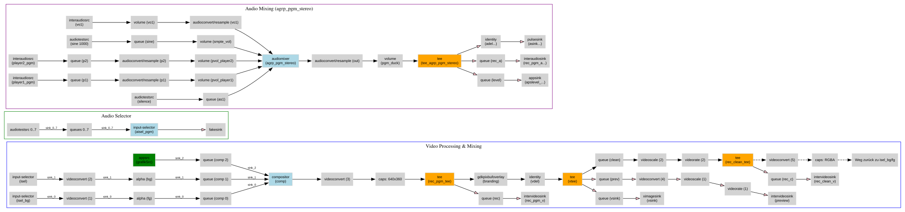

Pipeline Controller
Professionelles GStreamer-basiertes Broadcast-Playout-System (Channel-in-a-Box)
für Linux – mit HTML5-Weboberfläche, oGraf-Grafik-Engine und Plugin-System.
Was ist Pipeline Controller?
Pipeline Controller ist ein vollständiges Broadcast-Playout-System, das auf dem Open-Source-Framework GStreamer aufbaut. Es ermöglicht professionelle Sendeabwicklung mit:
- Bis zu 3 unabhängigen Medien-Playern (MXF, MP4, MOV, …)
- Master-Pipeline mit Compositor, Video-Switcher und Audio-Mixing
- Flexiblem Audio-Routing mit mehreren Gruppen, Kanal-Matrizen und 5.1-Upmix
- oGraf HTML5-Grafik-Engine (EBU-Standard) via Puppeteer/Chromium
- Playlist-Engine mit Übergängen und Event-Kindern
- Voiceover-Engine mit Fade-In/Out und Programm-Ducking
- Erweiterbarem Plugin-System für Router-Steuerung, Datei-Transfer u.v.m.
- Vollständiger REST-API und SSE-Event-Stream für externe Steuerung
Master-Pipeline – GStreamer-Elementgraph
Automatisch generierter Graph der laufenden Master-Pipeline (Compositor, Video-Switcher, Audio-Mixer/-Router, Sinks):

AppImage-Installation
AppImage erstellen (auf der Entwicklungsmaschine)
./build_appimage.sh
# Version wird automatisch aus package.json erhöht (Patch-Nummer)
# Ergebnis: releases/PipelineController-1.0.x-x86_64.AppImage
#
# Oder mit expliziter Version:
APPVER=2.0.0 ./build_appimage.shSchritt 1 – AppImage herunterladen und ausführbar machen
chmod +x PipelineController-x86_64.AppImageSchritt 2 – AppImage extrahieren
# Extrahiert in: ./squashfs-root/
./PipelineController-x86_64.AppImage --appimage-extractSchritt 3 – Aus dem extrahierten Verzeichnis starten
cd squashfs-root
./AppRunOder über den enthaltenen Start-Wrapper:
./squashfs-root/start.shSchritt 4 – Weboberfläche öffnen
Browser öffnen: http://localhost:3000
/opt/pipeline-controller/). Die Daten-Ordner (media/, playlists/, etc.)
werden relativ zum Startverzeichnis angelegt.
Systemvoraussetzungen (AppImage)
| Komponente | Anforderung |
|---|---|
| Betriebssystem | Linux x86_64, Kernel ≥ 5.4 (Debian 12 / Ubuntu 22.04 empfohlen) |
| X11-Display | Erforderlich für Videoausgabe (ximagesink) und Puppeteer |
| GStreamer | 1.20+ (im AppImage enthalten oder system-seitig installiert) |
| PulseAudio / ALSA | Für Audioausgabe (PulseAudio empfohlen) |
| RAM | ≥ 2 GB (4 GB empfohlen bei oGraf + mehreren Playern) |
| Storage | Je nach Medien-Cache; AppImage selbst ~300 MB extrahiert |
GStreamer-Plugins nachinstallieren (falls Fehler auftreten)
Das AppImage enthält die wichtigsten GStreamer-Plugins. Falls ein Plugin fehlt, kann es systemweit nachinstalliert werden:
sudo apt install \
gstreamer1.0-plugins-bad \
gstreamer1.0-plugins-ugly \
gstreamer1.0-libavgstreamer1.0-plugins-bad enthält u.a. dtsdec, compositor, inter{audio,video}src/sink und andere für professionelles Broadcast benötigte Elemente.
Installation aus dem Quellcode
Systemvoraussetzungen
# Node.js ≥ 18 (nvm empfohlen)
curl -o- https://raw.githubusercontent.com/nvm-sh/nvm/v0.39.7/install.sh | bash
nvm install 20
nvm use 20
# Build-Tools für native Node-Addons
sudo apt install build-essential libgstreamer1.0-dev \
libgstreamer-plugins-base1.0-dev
# GStreamer-Plugins
sudo apt install \
gstreamer1.0-tools \
gstreamer1.0-plugins-base \
gstreamer1.0-plugins-good \
gstreamer1.0-plugins-bad \
gstreamer1.0-plugins-ugly \
gstreamer1.0-libav \
gstreamer1.0-x \
gstreamer1.0-alsa \
gstreamer1.0-gl
# PulseAudio
sudo apt install pulseaudio
# Puppeteer-Abhängigkeiten (Chromium für oGraf)
sudo apt install libatk1.0-0 libatk-bridge2.0-0 libcups2 \
libxcomposite1 libxdamage1 libxfixes3 libxrandr2 libgbm1 \
libxkbcommon0 libpango-1.0-0 libcairo2 libasound2 libnss3Node-Abhängigkeiten installieren
cd "/path/to/PIPELINE CONTROLLER"
npm installnpm install kompiliert automatisch das native gst-kit-Addon (GStreamer-Bindings für Node.js) via node-gyp.
Start
node server.jsInstaller-Paket (empfohlen für Remote-Installation)
Das Installer-Paket erlaubt die Installation auf einem anderen Rechner ohne AppImage – als nativer Node.js-Dienst. Das Paket enthält den kompletten Quellcode, alle Konfigurationsdateien und ein interaktives Installations-Skript.
Paket erstellen (auf der Entwicklungsmaschine)
cd "/path/to/PIPELINE CONTROLLER"
./create_install_package.sh
# Version wird automatisch aus package.json erhöht (Patch-Nummer)
# Ergebnis: releases/PipelineController-1.0.x.tar.gz
#
# Oder mit expliziter Version:
APPVER=2.0.0 ./create_install_package.shVersionierung & GitHub Releases
- Artefakte landen in
releases/im Projektverzeichnis (in.gitignore— keine Binaries in Git-Objekten) - Patch-Version wird automatisch aus
package.jsonerhöht — kein manuelles Pflegen der Versionsnummer - Session-Lock: Werden AppImage und Installer-Paket in derselben Sitzung (< 1 Stunde) gebaut, teilen sich beide Skripte automatisch dieselbe Version — kein doppelter Increment
- Nach dem Build erscheint eine interaktive Abfrage:
package.jsoncommitten + Git-Tagv{VERSION}erstellen + pushen +gh release create-Befehl anzeigen
# GitHub CLI installieren (einmalig)
sudo apt install gh
gh auth login
# Release hochladen (Befehl wird vom Build-Skript angezeigt)
gh release create v1.0.1 \
releases/PipelineController-1.0.1.tar.gz \
releases/PipelineController-1.0.1-x86_64.AppImage \
--title 'Pipeline Controller 1.0.1' \
--notes 'Release 1.0.1'Auf dem Ziel-Rechner installieren
# 1. Paket übertragen (z.B. via scp)
scp releases/PipelineController-1.0.1.tar.gz user@remote:~/
# 2. Entpacken und Installer starten
ssh user@remote
tar -xzf PipelineController-1.0.1.tar.gz
cd PipelineController-1.0.1
bash install.shWichtig: install.sh niemals mit sudo starten – PulseAudio/PipeWire läuft als normaler Benutzer.
Was der Installer macht
- Prüft Node.js ≥ 18, GStreamer-Plugins (inkl.
intervideosrc), ffmpeg - Installiert fehlende Abhängigkeiten via
apt-get(sudo-Passwort wird abgefragt) - Fragt nach Installationsverzeichnis (Standard:
~/pipeline-controller) - Kopiert alle Anwendungsdateien, erstellt Laufzeitverzeichnisse
- Bereinigt
settings.jsonundplugins.json: setzt alle Pfade auf das neue Installationsverzeichnis - Setzt
videoSinkauffakesink(headless-sicher; in der UI änderbar) - Führt
npm installdurch und lädt Chromium für oGraf - Erstellt
start.shund richtet optional einen Systemd-User-Service ein
Kritische GStreamer-Plugins
Der Installer prüft explizit intervideosrc, intervideosink, interaudiosrc, interaudiosink (aus gstreamer1.0-plugins-bad). Fehlt eines davon, startet weder die Master-Pipeline noch die Preview.
settings.json überschrieben, nicht "gültig behalten" – der Installer erkennt diesen Fall und setzt Pfade immer explizit auf das Installationsverzeichnis.
Nach der Installation starten
# Direkt starten
bash ~/pipeline-controller/start.sh
# Systemd User-Service (falls beim Install eingerichtet)
systemctl --user start pipeline-controller
journalctl --user -u pipeline-controller -fHTTPS / TLS (optional)
Pipeline Controller unterstützt HTTPS als optionalen zweiten Server-Port. Der HTTP-Server bleibt parallel aktiv (z.B. für lokalen Zugriff).
Zertifikat erstellen (selbstsigniert)
openssl req -x509 -newkey rsa:4096 \
-keyout ~/pipeline-controller/key.pem \
-out ~/pipeline-controller/cert.pem \
-days 3650 -nodes -subj "/CN=mein-server"Konfiguration in settings.json
{
"httpsKey": "/home/user/pipeline-controller/key.pem",
"httpsCert": "/home/user/pipeline-controller/cert.pem",
"httpsPort": 3443
}Konfiguration via Umgebungsvariablen
HTTPS_KEY=/path/to/key.pem HTTPS_CERT=/path/to/cert.pem HTTPS_PORT=3443 node server.jsNach dem Neustart ist die Web-Oberfläche unter https://server:3443 erreichbar. Bei selbstsignierten Zertifikaten muss die Browser-Ausnahme einmalig bestätigt werden.
Multi-Channel-Betrieb: Übersicht & Architektur
Eine DeckLink-IP-100-Karte (oder ähnliche Multi-I/O-Hardware) hat mehrere physische Ein-/Ausgänge. Pipeline Controller kann pro Host mehrere unabhängige Channels/Playlisten parallel betreiben – jeder Channel ist ein eigenständiger server.js-Prozess mit eigenem DeckLink-Device, eigenen Daten (settings.json, library.json, Playlisten) und eigenem Web-Port.
Warum ein eigener Prozess pro Channel?
gst-kit's natives GStreamer-Addon ist nicht worker_thread-sicher (siehe Plugin-System), deshalb läuft jeder Channel als vollständig isolierter Node-Prozess (child_process.fork()). Ein Absturz eines Channels (z.B. durch eine defekte Mediendatei) hat keine Auswirkung auf die anderen laufenden Channels.
Typischer Anwendungsfall: Hauptkanal + Variante
Beispiel: ORF2 spielt das Hauptprogramm, ORF2E spielt dasselbe Programm mit Gebärdensprachdolmetsch. Beide laufen als eigene Channel-Prozesse auf demselben Rechner (oder auf getrennten Rechnern für Redundanz). Beim Wegstieg von ORF2 in ein Live-Ereignis muss ORF2E synchron mitschalten – dafür sorgt der ChannelBus.
Ein weiterer Anwendungsfall: eine Regionalvariante, die inhaltlich identisch zur Hauptliste läuft, aber in Werbeblöcken eigene Spots einspielt.
Architekturdiagramm
┌─────────────────────────────────────────────────────────────┐
│ Browser → Supervisor-Dashboard (http://host:3099) │
│ Übersicht aller Channels, Start/Stop/Restart, "UI öffnen" │
└──────────────────────────┬──────────────────────────────────┘
│ fork() + Health-Monitoring
┌──────────────────┼──────────────────┐
▼ ▼
┌───────────────────┐ ┌───────────────────┐
│ server.js (ORF2) │ ChannelBus │ server.js (ORF2E) │
│ PORT=3000 │◄──── TCP ────►│ PORT=3010 │
│ PC_DATA_DIR=orf2/ │ Trigger/Sync │ PC_DATA_DIR=orf2e/ │
│ DeckLink Device 0 │ │ DeckLink Device 1 │
└───────────────────┘ └───────────────────┘Supervisor & Dashboard
supervisor.js startet und überwacht mehrere server.js-Instanzen und bietet ein zentrales Web-Dashboard zur Verwaltung. Es ersetzt nicht den einzelnen Channel – jeder Channel bleibt über seinen eigenen Port erreichbar – sondern dient als Einstiegspunkt, von dem aus alle Channels gestartet, gestoppt und geöffnet werden können.
channels.json
Liste der Channels, relativ zum Repo-Root oder absolut. Wird beim Anlegen/Entfernen von Channels über das Dashboard automatisch aktualisiert.
[
{ "id": "ORF2", "dataDir": "channels/orf2", "port": 3000, "grafikPort": 3101 },
{ "id": "ORF2E", "dataDir": "channels/orf2e", "port": 3010, "grafikPort": 3111 }
]| Feld | Beschreibung |
|---|---|
id | Eindeutige Channel-ID (auch als ChannelBus-Adresse verwendet) |
dataDir | Eigenes Datenverzeichnis des Channels (settings.json, library.json, playlists/, …) – wird beim ersten Start automatisch angelegt |
port | HTTP-Port der Web-Oberfläche dieses Channels |
grafikPort | Port des oGraf-Template-Servers (Default: port + 100) |
env | (optional) Zusätzliche/überschreibende Umgebungsvariablen, z.B. für Hardware-spezifische Overrides |
Starten
node supervisor.js channels.json
# Dashboard: http://localhost:3099Eine leere oder fehlende channels.json ist erlaubt – Channels lassen sich dann ausschließlich über das Dashboard-Formular anlegen.
Dashboard-Funktionen
| Funktion | Beschreibung |
|---|---|
| Status-Übersicht | Alle Channels mit Status (running/starting/restarting/stopped/crashed), PID, Port, Restart-Zähler – Auto-Refresh alle 2s |
| UI öffnen | Öffnet die Web-Oberfläche des jeweiligen Channels in neuem Tab (eigener Port – kein gemeinsamer Reverse-Proxy) |
| Start / Stop / Restart | Pro Channel einzeln steuerbar |
| Channel hinzufügen | Formular (ID, Data-Dir, Port, Grafik-Port) → legt Channel an, startet ihn sofort, persistiert in channels.json |
| Channel entfernen | Stoppt den Prozess und entfernt den Eintrag aus channels.json |
Crash-Recovery
Stürzt ein Channel-Prozess ab (Exit-Code ≠ 0 oder Signal), startet der Supervisor ihn nach 3 Sekunden automatisch neu (festes Intervall, kein Backoff). Andere laufende Channels bleiben dabei unberührt. Bei explizitem Stop über das Dashboard erfolgt kein automatischer Neustart.
Relevante Umgebungsvariablen
| Variable | Standard | Beschreibung |
|---|---|---|
SUPERVISOR_PORT | 3099 | HTTP-Port des Supervisor-Dashboards |
PC_DATA_DIR | Repo-Root | Wird vom Supervisor pro Channel automatisch gesetzt – überschreibt den Speicherort von settings.json/library.json/playlists/ etc., damit Channels sich nicht gegenseitig überschreiben. Im Single-Channel-Betrieb (ohne Supervisor) nicht gesetzt → Standardverhalten unverändert. |
Hinweis: Es gibt aktuell keinen gemeinsamen Port für alle Channel-UIs (kein Reverse-Proxy) – jeder Channel bleibt unter seinem eigenen Port erreichbar. Das Dashboard ist der zentrale Einstiegspunkt, von dem aus man zu den einzelnen Channel-UIs verlinkt.
ChannelBus & Trigger
Der ChannelBus (lib/ChannelBus.js) verbindet mehrere Channel-Prozesse – auf demselben Host oder über mehrere Hosts hinweg (Redundanz-Setups) – über einfache TCP-Verbindungen. Damit lassen sich Befehle wie NEXT, NEXT_LIVE, JUMP, CUT von einer Playlist zu einer anderen schicken.
Adressierung: Gruppen statt feste IDs
Jeder Channel kann einer oder mehreren Gruppen angehören. Ein Trigger wird an eine Gruppe gesendet, nicht an eine feste Channel-ID – die Hauptliste muss damit ihre "Follower" nicht namentlich kennen.
Aktivierung in settings.json
{
"channelBus": {
"enabled": true,
"channelId": "ORF2",
"groups": [],
"listenPort": 17801,
"peers": [{ "host": "10.0.0.5", "port": 17802 }]
}
}| Feld | Beschreibung |
|---|---|
enabled | ChannelBus aktivieren (ohne diese Einstellung verhält sich der Channel unverändert – kein offener Port) |
channelId | Eigene Adresse im Bus (Default: channelName) |
groups | Gruppen-Mitgliedschaften, z.B. ["orf2-followers"] |
listenPort | TCP-Port, auf dem dieser Channel auf eingehende Peer-Verbindungen lauscht |
peers | Ausgehende Verbindungen zu anderen Channels (host/port) – mit automatischem Reconnect bei Abbruch |
Änderungen wirken erst nach Neustart (Verbindungen werden nur beim Prozessstart aufgebaut). Konfigurierbar über die UI (Einstellungen) oder direkt per GET/POST /api/config/channelbus.
Trigger als Playlist-Event-Children
Ein Trigger lässt sich direkt an ein Playlist-Item hängen – als Child-Event, zeitlich exakt geplant wie Grafik- oder Voiceover-Children (inklusive negativem Delay für Pre-Roll, z.B. um eine Sekunde vor dem eigentlichen Umschnitt zu feuern):
{
"source": "trigger",
"trigger": {
"targetGroup": "orf2-followers",
"type": "NEXT_LIVE",
"delayFrames": -50,
"payload": { "reason": "live-in" }
}
}| Feld | Beschreibung |
|---|---|
targetGroup / target | Zielgruppe bzw. feste Channel-ID |
type | Befehl: NEXT, JUMP, FORCE_JUMP, NEXT_LIVE, CUT, STOP, PLAY |
delayFrames / delay | Zeitpunkt relativ zum Clip-Start (negativ = Pre-Roll, vor dem eigentlichen Start) |
endOffsetFrames / endOffset | Zeitpunkt relativ zum Clip-Ende (negativ = davor) |
payload | Beliebige Zusatzdaten, die beim Empfänger ankommen |
Verhalten beim Empfänger
index/slotId im Payload referenzieren immer die eigene Playlist des Empfänger-Channels – jeder Channel hat eine eigenständige Item-Indizierung. NEXT_LIVE ohne explizites payload.index sucht automatisch das nächste eigene Live-Event ab der aktuellen Position: die Hauptliste muss also nur "jetzt Live" signalisieren, der Follower-Channel kennt seinen eigenen Live-Slot selbst.
Beispiel ORF2 / ORF2E
- ORF2-Playlist hat am Live-Event ein Trigger-Child:
targetGroup: "orf2-followers",type: "NEXT_LIVE". - ORF2E ist Mitglied der Gruppe
orf2-followersund hat in seiner eigenen Playlist ein Live-Event für den Gebärdendolmetsch-Feed. - Beim Wegstieg in ORF2 feuert der Trigger, ORF2E schaltet synchron auf seinen eigenen Live-Slot um.
Starten
Einfacher Start
cd "/path/to/PIPELINE CONTROLLER"
node server.js
# oder aus dem AppImage-Verzeichnis:
./AppRunWeboberfläche: http://localhost:3000
Start mit Optionen
PORT=3000 MEDIA_DIR=/mnt/san/media DISPLAY=:0 node server.jsAutostart via systemd (Produktionsbetrieb)
# /etc/systemd/system/pipeline-controller.service
[Unit]
Description=Pipeline Controller
After=network.target sound.target graphical.target
[Service]
User=benutzername
WorkingDirectory=/opt/pipeline-controller/squashfs-root
Environment=DISPLAY=:0
Environment=PULSE_SERVER=unix:/run/user/1000/pulse/native
ExecStart=/opt/pipeline-controller/squashfs-root/AppRun
Restart=on-failure
RestartSec=5
[Install]
WantedBy=multi-user.targetsudo systemctl enable pipeline-controller
sudo systemctl start pipeline-controller
sudo journalctl -u pipeline-controller -f # Logs verfolgenEinstellungen
Alle Einstellungen werden in settings.json gespeichert und sind über das ⚙ Zahnrad-Symbol in der UI erreichbar.
Video-Tab
| Einstellung | Beschreibung | Standard |
|---|---|---|
| Auflösung / FPS | Format der Master-Pipeline, z.B. 1920×1080@25 | 640×360@25 |
| Video-Sink | GStreamer-Element für die Videoausgabe | ximagesink |
| Scale-Modus | fit / fill / stretch – Skalierung bei abweichendem Quell-Seitenverhältnis | fit |
| Scale-Methode | Qualität: 0=Nearest, 1=Bilinear, 2=Lanczos | 1 |
| Deinterlace | auto / always / never | auto |
| Idle-Quelle | Signal wenn kein Clip aktiv: smpte / black / image | image |
| Idle-Bild | Dateiname aus images/ für Idle-Quelle image | — |
Verfügbare Video-Sinks
| Sink | Beschreibung |
|---|---|
ximagesink | X11-Fenster (Standard auf Desktop) |
xvimagesink | X11 mit Hardware-Accelerated Scaling |
autovideosink | Automatische Auswahl des besten Sinks |
fakesink | Kein Bild – für Tests oder headless Betrieb |
decklinkvideosink | Blackmagic DeckLink SDI-Ausgang (erfordert DeckLink-Treiber) |
Audio-Tab
Audio-Gruppen, Presets und Clock-Konfiguration werden in audio_config.json gespeichert (→ Audio-Konfiguration).
Debug-Tab
| Profil | GST_DEBUG-Level | Verwendung |
|---|---|---|
| Nur Fehler | *:1 | Produktionsbetrieb |
| Fehler + Warnungen | *:2 | Problemsuche |
| Info | *:3 | Detailanalyse |
| Verbose | *:5 | Entwicklung / Bug-Reports |
Authentication
Optional Bearer-token authentication for the web interface. Enable it in the UI under Settings → Users. See User Management for the full setup guide.
Design & Sprache
Hell / Dunkel Design
Das UI unterstützt Dark Mode (Standard) und Light Mode. Umschalten über ⚙ Einstellungen → Darstellung → Design-Modus.
- 🌙 Dunkel: Standard – optimiert für Broadcast-Kontrollräume mit gedimmtem Licht.
- ☀ Hell: Für helle Umgebungen oder externe Monitore.
Das gewählte Design wird im Browser-LocalStorage gespeichert und gilt pro Benutzer.
Panel-Hintergrundfarben
Playlist- und Vorbereitungs-Panel können individuell eingefärbt werden (Farbwähler unter Darstellung → Panel-Hintergrundfarben). Farben werden ebenfalls im LocalStorage gespeichert.
Sprache
Die Benutzeroberfläche ist zweisprachig verfügbar. Umschalten unter ⚙ Einstellungen → Darstellung:
- 🇩🇪 Deutsch
- 🇬🇧 English
Die Sprachauswahl wird im LocalStorage des Browsers gespeichert und gilt pro Benutzer/Gerät.
Tastaturkürzel (Shortcuts)
Alle Shortcuts sind vollständig konfigurierbar unter ⚙ Einstellungen → Shortcuts. Die Konfiguration wird in grafik_hotkeys.json gespeichert.
Standard-Shortcuts
| Aktion | Standard |
|---|---|
| Play / Nächster Clip | Space |
| Hard Cut (sofort umschalten) | H |
| Preview an/aus | F2 |
| Aufzeichnung-Panel öffnen | R |
| Grafik-Hotkeys 1–9 | 1–9 (konfigurierbar) |
Shortcuts anpassen
- ⚙ Einstellungen → Shortcuts öffnen
- Auf die Tastenkombination eines Eintrags klicken
- Neue Taste(n) drücken
- 💾 Shortcuts speichern
Chord-Shortcuts (z.B. Ctrl+G) werden ebenfalls unterstützt.
User Management
Bearer Token Auth Admin onlyPipeline Controller includes an optional role-based access control system. When disabled, the web interface is open to anyone on the network with no login required. When enabled, every API call and page load requires a valid Bearer token obtained at login.
Enabling Authentication
- Open the UI and navigate to Settings → Users (gear icon).
- Check Enable Authentication.
- Save. The page will immediately show a login prompt on next access.
The setting is stored as "authEnabled": true in settings.json.
Roles
Each user can hold any combination of roles. The admin role always supersedes all others.
| Role | Access |
|---|---|
admin |
Full access — user management, all settings, plugins, playlist, graphics, media library, user activity log. |
editor |
Playlist control (play, stop, next, load, edit events), media library, SOM/EOM, plugin management, user activity log view. |
grafiker |
Graphics (oGraf templates, take/out, hotkeys) — no playlist or system access. |
viewer |
Read-only — can watch the live state, SSE event stream, and playlist but cannot trigger any actions. |
Managing Users in the UI
All user operations require the admin role.
Add a user
- Settings → Users → click ＋ Add User.
- Enter a username and password.
- Select one or more roles from the checkboxes (
admin,editor,grafiker,viewer). - Click Save.
Edit a user
Click the pencil icon next to any user in the list. You can change the username, password, and roles. Leave the password field blank to keep the current password.
Delete a user
Click the trash icon next to a user. The action is immediate. You cannot delete your own account while logged in.
users.json Format
Users are persisted in users.json next to server.js. Passwords are stored as SHA-256 hashes — never in plain text.
[
{
"id": "b31c63494568",
"username": "editor1",
"password": "<sha256-hash>",
"roles": ["editor"]
}
]users.json manually while the server is running. Use the UI or the REST API instead — the server keeps the file in sync automatically.
REST API
All user management endpoints require an Authorization: Bearer <token> header from an admin session.
| Method | Endpoint | Description |
|---|---|---|
POST | /api/auth/login | Log in — body: {"username":"…","password":"…"}. Returns token, username, roles. |
POST | /api/auth/logout | Invalidate the current session token. |
GET | /api/auth/me | Returns current session info and whether auth is enabled. |
GET | /api/users | List all users (id, username, roles — no password hash). admin only. |
POST | /api/users | Create a user — body: {"username","password","roles":["editor"]}. admin only. |
PATCH | /api/users/:id | Update username, password, and/or roles by user ID. admin only. |
DELETE | /api/users/:id | Delete a user by ID. admin only. |
GET | /api/userlog | Retrieve the user activity log (JSONL). admin / editor. |
User Activity Log
Every login, logout, and write operation is appended to a JSONL log file. The log path is set in Settings → Users → Activity Log Path (e.g. /var/log/pipeline-controller/userlog.jsonl).
{"ts":"2026-05-18T14:00:00.000Z","user":"editor1","ip":"192.168.1.5","action":"playlist.set","detail":"42 events"}Logged actions include: auth.login, auth.logout, user.create, user.update, user.delete, playlist.set, playlist.play, playlist.next, and more.
Audio-Konfiguration
Datei: audio_config.json – wird automatisch beim Speichern über die UI aktualisiert oder kann manuell bearbeitet werden.
Struktur
{
"groups": [
{
"id": "pgm-stereo",
"label": "Programmton Stereo",
"channels": 2,
"sink": "pulsesink",
"r128": {
"enabled": true,
"target": -23,
"maxGain": 12,
"smoothRate": 0.5
}
},
{
"id": "pgm-51",
"label": "Programmton 5.1",
"channels": 6,
"sink": "fakesink"
}
],
"presets": {
"stereo": {
"label": "Stereo (CH1=L, CH2=R)",
"routes": [
{ "from": "mxf_ch1", "to": ["pgm-stereo:L"] },
{ "from": "mxf_ch2", "to": ["pgm-stereo:R"] }
],
"upmix": [
{ "from": "pgm-stereo", "to": "pgm-51", "method": "ltrt" }
]
}
},
"clock": {
"provider": "audiotestsrc"
}
}Audio-Gruppen
| Feld | Typ | Beschreibung |
|---|---|---|
id | string | Eindeutiger Bezeichner (Buchstaben, Ziffern, Bindestriche) |
label | string | Anzeigename in der UI und im VU-Meter |
channels | 2 / 6 | Kanalanzahl: 2 = Stereo, 6 = 5.1 Surround |
sink | string | GStreamer-Audioausgabe: pulsesink, alsasink, fakesink, autoaudiosink |
r128 | object | EBU R128 Loudness-Normalisierung (optional) |
Kanal-Bezeichner für Routing
| Bezeichner | Bedeutung |
|---|---|
mxf_ch1 … mxf_ch8 | Mono-Audiospuren aus der Quelldatei (1-basiert) |
<gruppen-id>:L | Linker Kanal der Gruppe |
<gruppen-id>:R | Rechter Kanal der Gruppe |
<gruppen-id>:C | Center (5.1) |
<gruppen-id>:LFE | Subwoofer (5.1) |
<gruppen-id>:Ls / :Rs | Surround Left/Right (5.1) |
Upmix-Methoden
| Methode | Beschreibung |
|---|---|
ltrt | Lt/Rt Surround-Downmix-kompatibel (empfohlen für Broadcast) |
loro | Lo/Ro Stereo-Kompatibel |
matrix | Benutzerdefinierte Routing-Matrix |
Clock-Provider
| Wert | Beschreibung |
|---|---|
audiotestsrc | Pipeline-interne Clock (Standard, stabil) |
system | Linux-Systemclock |
ptp-generic | IEEE 1588 PTP über Netzwerk (SMPTE 2110) |
ptp-decklink | Blackmagic DeckLink PTP-Clock |
Zusatz-Ausgänge (Downconvert / Cleanfeed / DeckLink)
Im Server-Tab der Einstellungen ("Zusatz-Ausgänge") lässt sich eine beliebige Anzahl zusätzlicher Ausgänge konfigurieren — unabhängig vom Hauptprogramm-Pfad (eigene gst-kit-Pipeline pro Ausgang, kein Einfluss auf PGM/A-V-Sync). Jeder Ausgang zapft denselben internen Kanal an, den auch die Aufzeichnung nutzt:
Quelle (source) | Kanal intern | Bedeutung |
|---|---|---|
pgm | rec_pgm_v | Programmbild inkl. Grafik/Branding |
clean | rec_clean_v | Cleanfeed — Signal vor Grafik/Compositor |
Sink-Typen
| Sink | Beschreibung |
|---|---|
udp / srt / rtmp | Netzwerk-Stream, H.264-encodiert (width/height = 0 lässt die Originalauflösung; bitrate in kbit/s; speedPreset = x264enc-Preset) |
file | Lokale Matroska-Datei |
decklink | Blackmagic-DeckLink-Hardware-Ausgang (SDI/HDMI) — kein Encoding, direkt decklinkvideosink/decklinkaudiosink |
DeckLink-Ausgang
Geräte per 🔍-Button suchen (nutzt denselben Discovery-Mechanismus wie der Haupt-Programmausgang, /api/devices/sinks). decklinkvideosink ist modusgebunden — feste Auflösung/Framerate je Modus, kein freies width/height. Nur progressive Modi werden angeboten:
| Modus | Auflösung | Framerate |
|---|---|---|
pal-p | 720×576 | 50p |
720p50 | 1280×720 | 50p |
720p5994 | 1280×720 | 59.94p |
1080p25 | 1920×1080 | 25p |
1080p2997 | 1920×1080 | 29.97p |
1080p50 | 1920×1080 | 50p |
ntsc, pal, 1080i50, …) sind bewusst nicht angeboten: decklinkvideosink verlangt dafür je Modus exakte pixel-aspect-ratio/Format-Kombinationen, die nicht pauschal robust zu treffen sind. Für klassische interlaced-SDI-Ausgabe wird stattdessen der Haupt-Programmausgang (Einstellungen → Video, eigene Auto-Detect-Logik) verwendet.
API
| Endpoint | Beschreibung |
|---|---|
POST /api/outputs/settings | Konfiguration speichern ({ outputs: [...] }) — aktiviert automatisch alle enabled:true-Ausgänge |
POST /api/outputs/start / /stop | Einzelnen Ausgang per id starten/stoppen |
POST /api/outputs/stop-all | Alle Zusatz-Ausgänge stoppen |
GET /api/outputs/status | Laufstatus, Laufzeit, Fehler je Ausgang |
Umgebungsvariablen
| Variable | Standard | Beschreibung |
|---|---|---|
PORT | 3000 | HTTP-Port der Weboberfläche |
MEDIA_DIR | ./media | Pfad zum Medien-Ordner |
PLAYLISTS_DIR | ./playlists | Pfad zum Playlist-Ordner |
GRAFIK_PORT | 3101 | HTTP-Port des oGraf-Template-Servers |
DISPLAY | — | X11-Display, z.B. :0 |
PULSE_SERVER | — | PulseAudio-Socket, z.B. unix:/run/user/1000/pulse/native |
GST_DEBUG | — | GStreamer Debug-Filter, z.B. *:2 |
VIDEO_SINK | auto | GStreamer Video-Sink überschreiben |
AUDIO_SINK | pulsesink | GStreamer Audio-Sink überschreiben |
Benutzeroberfläche
Toolbar (oben)
| Element | Funktion |
|---|---|
| ▶ START | Master-Pipeline starten (Video + Audio aktivieren) |
| ■ STOP | Master-Pipeline stoppen |
| 📺 Preview | JPEG-Vorschau ein-/ausblenden (5 fps, 640×360) |
| ⚙ | Einstellungen öffnen |
| 🔔 | Status-Benachrichtigungen |
Switcher
Schaltet die aktive Programmquelle in der Master-Pipeline:
| Quelle | Beschreibung |
|---|---|
| SMPTE | Testbild (Farbbalken) + 1-kHz-Referenzton |
| SCHWARZ | Schwarzbild + Stille (Audio-Stille) |
| BILD | Konfiguriertes Idle-Standbild aus images/ |
| BILD + PL | Idle-Bild mit Playlist-Overlay |
| PLAYER 1 / 2 / 3 | Aktiver Medien-Player |
Player-Slots
Pipeline Controller stellt bis zu 3 unabhängige Player bereit. Jeder Player läuft in einer eigenen GStreamer-Pipeline und übergibt Audio/Video über die interaudio/intervideo-Schnittstelle an die Master-Pipeline.
Player-Steuerung
| Aktion | Beschreibung |
|---|---|
| Cue / Vorladen | Clip laden und auf EOM positionieren – ohne Programmwechsel |
| ▶ Play | Clip starten + Switcher auf diesen Player schalten |
| ⏸ Pause | Bild einfrieren (Audio stumm) |
| ■ Stop | Player zurücksetzen, Switcher auf Idle |
EOM-Verhalten (End of Material)
Wenn ein Clip sein EOM erreicht:
- Playlist-Engine prüft das nächste Event
- Bei vorhandenem Folge-Clip: automatischer nahtloser Schnitt
- Ohne Folge-Event: Wechsel auf konfigurierte Gap-Quelle (Schwarz / Idle)
As-Run-Log
Jede Sendung wird automatisch protokolliert in asrun/AsRun_YYYYMMDD.txt:
2026-05-03T08:00:00Z PLAY player1 news_intro.mxf 00:00:00:00
2026-05-03T08:00:28Z STOP player1 news_intro.mxf 00:00:28:06Playlist
Event-Typen
| Typ | Beschreibung |
|---|---|
player | Mediendatei aus der Bibliothek (MXF, MP4, MOV, …) |
grafik | oGraf/HTML5-Grafik als Primär-Event |
image | Standbild (JPG/PNG) aus images/ |
live | Live-Signal (Switcher bleibt auf aktuellem Input) |
gap | Explizite Pause / Schwarzbild für definierte Dauer |
Übergänge
| Übergang | Beschreibung |
|---|---|
cut | Harter Schnitt (Standard) |
xfade | Crossfade (Überblendung): beide Clips laufen kurz gleichzeitig — Clip-Dauer muss ≥ Überblendzeit sein |
v-fade | V-Blende: aus nach Schwarz, dann ein |
cut-fade | Schnitt rein, Blende raus |
fade-cut | Blende rein, Schnitt raus |
Transition-Timing-Validierung
Pipeline Controller prüft automatisch, ob Clip-Dauern mit den konfigurierten Überblendzeiten kompatibel sind. Probleme werden als Badge 🔀⚠ in der Playlist angezeigt (Tooltip zeigt Details). Warnungen blockieren das Speichern nicht.
| Szenario | Prüfung |
|---|---|
| Clip kürzer als Crossfade-Out | duration[i] < xfadeMs des Folge-Events |
| Doppel-Crossfade (Sandwich) | xfadeMs_in + xfadeMs_out ≥ duration[i] |
| Softwarnung: Übergänge verbrauchen >85% des Clips | Hinweis ohne Blockierung |
| Fade-Typen (v-fade, fade-cut, cut-fade) | Wie Crossfade für ausgehende Seite |
| Live-Vorcue länger als vorheriger Clip | duration[prev] < liveCueLeadSec |
| Kind-Event (Grafik) übersteigt Clipdauer | delay + duration > parent-Clipdauer |
Im Event-Editor werden Warnungen beim Speichern als Toast angezeigt (ohne Blockierung). Die Überblendzeiten (fast / medium / slow in ms) sind unter Einstellungen → Überblendungen konfigurierbar und lösen eine Neuprüfung aller Events aus.
Playlist-JSON-Format
[
{
"id": "evt-001",
"source": "player",
"file": "nachrichten.mxf",
"som": "00:00:00:00",
"eom": "00:05:30:00",
"transition": "cut",
"audioPreset": "stereo",
"children": [
{
"source": "grafik",
"grafik": {
"template": "lower-third",
"data": { "name": "Max Mustermann", "title": "Korrespondent Wien" },
"delay": 3,
"duration": 8
}
}
]
}
]Grafik-Timing-Parameter (als Playlist-Child)
| Parameter | Beschreibung |
|---|---|
delay | Sekunden nach Clip-Start (0 = sofort) |
delayFrames | Frames nach Clip-Start (überschreibt delay) |
duration | Sichtbar für N Sekunden (0 = manuell ausblenden) |
durationFrames | Sichtbar für N Frames |
endOffset | Ausblenden N Sekunden vor Clip-Ende (negative Zahl) |
endOffsetFrames | Ausblenden N Frames vor Clip-Ende |
Counter-Strip
Der Counter-Strip am oberen Bildschirmrand zeigt auf einen Blick alle zeitkritischen Ereignisse der laufenden Sendestunde.
| Zelle | Farbe | Inhalt |
|---|---|---|
| ⏰ FIX-START | Gelb | Countdown zum nächsten Fixzeit-Ereignis (startType=fixtime) oder zum Fix-Ende des laufenden Events |
| ▶ LAUFEND | Grün | Restzeit des aktuellen On-Air-Events mit Fortschrittsbalken |
| ⇥ NÄCHSTER | — | Gap/Overlap zum nächsten Event in der Timeline |
| 📺 NÄCHSTES LIVE | Blau | Countdown zum nächsten Live-Ereignis |
| ⏭ NÄCHSTE AKTION | Orange | Nächster Grafik-Child-Event oder nächstes Playlist-Event |
| ⚠ NÄCHSTES FEHLT | Rot | Countdown bis zum nächsten Event mit fehlendem File |
Scroll-Navigation
Ein Klick auf eine Counter-Zelle scrollt die Playlist-Liste zum entsprechenden Event und hebt es kurz hervor. Ausnahme: die LAUFEND-Zelle scrollt zum aktuellen On-Air-Event.
Sichtbarkeit konfigurieren
Über das ⚙-Symbol im Strip-Header können einzelne Zellen ein- oder ausgeblendet werden. Die Einstellung wird im Browser-LocalStorage gespeichert.
Asset-Panel
Das Asset-Panel ermöglicht den schnellen Umschnitt auf vordefinierte Inhalte (z.B. Werbeblöcke, Promos, Jingles) ohne manuelle Playlist-Bearbeitung.
Asset-Rückkehr-Modi
| Modus | Verhalten |
|---|---|
| interrupt |
Das laufende On-Air-Event (sofern Clip) wird unterbrochen. Pipeline Controller:
|
| break | Sofortiger Schnitt auf Asset; kein Return (Playlist läuft nach Asset normal weiter) |
| live | Nach dem Asset wird auf eine konfigurierte Live-Quelle umgeschaltet |
Asset anlegen / bearbeiten
- Asset-Panel öffnen (⬛-Button oben)
- Assets-Liste-Symbol → ＋ Neues Asset
- Label, Farbe und Rückkehr-Modus setzen
- Events hinzufügen (Clips, Live-Quellen, Schwarz)
- Speichern
Voiceover
Die Voiceover-Engine erlaubt das Einblenden einer Audio-Datei (WAV/MP3) über den laufenden Programm-Ton mit konfigurierbarem Fade-In/Out und Programm-Ducking.
Presets
| Preset-ID | VO-Lautstärke | Programm-Lautstärke | Verwendung |
|---|---|---|---|
AP100 | 100 % | 0 % | Volleinblendung (VO verdrängt Programm) |
AP75 | 100 % | 25 % | Klassisches Voiceover |
AP50 | 100 % | 50 % | Mix 50/50 |
AP25 | 50 % | 100 % | Hintergrundvoice |
ST | 100 % | 100 % | Stereo-Mix ohne Ducking |
ST-ALL | 100 % | 0 % | Alle Gruppen, kein Programm |
API-Aufruf
POST /api/voiceover/play
{
"filePath": "/pfad/zu/musik.wav",
"preset": "AP75",
"fadeInMs": 500,
"fadeOutMs": 1000,
"durationMs": 30000
}Unterstützte Formate: WAV (PCM 8/16/24/32 Bit, IEEE Float 32/64 Bit) und MP3.
Channel Branding
PNG-Grafiken aus dem Ordner channelbranding/ können als transparentes Overlay über das Programmbild gelegt werden.
- UI: Grafik-Panel → Branding-Bereich → Datei auswählen → Einblenden
- Transparenz-Unterstützung: PNG mit Alpha-Kanal
- API:
POST /api/branding/show { "file": "logo.png" } - API:
POST /api/branding/hide
Audio-Routing – Architektur
MXF/MP4-Datei
└── GStreamer uridecodebin
└── audiomixmatrix ← Kanal-Routing per Preset
├── interaudiosink channel=player1_pgm-stereo
├── interaudiosink channel=player1_begl-stereo
└── interaudiosink channel=player1_pgm-51
Master-Pipeline
├── interaudiosrc channel=player1_pgm-stereo
│ └── input-selector (Player1/2/3 + SMPTE + Stille)
│ └── audiomixer (+ Voiceover-Mix)
│ └── pulsesink [VU-Meter]
├── interaudiosrc channel=player1_begl-stereo
│ └── input-selector → audiomixer → fakesink
└── interaudiosrc channel=player1_pgm-51
└── input-selector → audiomixer → fakesinkVU-Meter
Das VU-Meter zeigt den Pegel jeder konfigurierten Audio-Gruppe in Echtzeit an. Es erscheint im Preview-Bereich wenn Preview aktiv ist. Die Daten werden über den SSE-Event-Stream als audio-level-Event übertragen.
Audio-Presets & Routing
Presets definieren, wie die Audiospuren der Mediendatei auf die Audio-Gruppen verteilt werden. Ein Preset kann optional einen upmix-Eintrag enthalten, um Stereo-Signal auf 5.1 hochzumixen.
audioPreset-Parameter in einem Playlist-Event überschreibt das globale Standard-Preset für diesen Clip. So kann jedes Event ein eigenes Routing haben.
Automatische Preset-Regeln (AudioRules)
In den Einstellungen können Regeln definiert werden, die automatisch das passende Preset anhand von Dateiname, Metadaten oder Kanal-Anzahl auswählen:
[
{ "condition": "channels >= 6", "preset": "51-direkt" },
{ "condition": "filename contains 'DE'", "preset": "stereo" }
]Audio-Resilienz (Preset-Fallback)
v1.2.0Audio-Resilienz verhindert stille Ausgaben, wenn ein Playlist-Event ein Audio-Preset verlangt, das mehr Audiokanäle voraussetzt als die Mediendatei tatsächlich enthält — z.B. ein 5.1-Preset auf einer Stereo-Datei.
Funktionsweise
Es gibt zwei Erkennungsmechanismen, die parallel aktiv sind:
- Statische Vorab-Prüfung (Pre-Cue): Beim Einlesen der Datei analysiert der Server die Kanal-Anzahl (aus den Bibliotheks-Metadaten). Reicht die Datei nicht für das gewählte Preset, wird automatisch auf das erste kompatible Preset in der konfigurierten Fallback-Kette umgeschaltet — noch bevor das Event on-air geht. Im Playlist-Event erscheint ein 🔇⚠-Badge.
- Dynamische Laufzeit-Erkennung (EBU-Stille): Während der Wiedergabe wird das RMS-Pegel jeder Audio-Gruppe überwacht. Surround-Gruppen (mehr als 2 Kanäle), die dauerhaft unter dem konfigurierten Schwellwert liegen, während eine Stereo-Referenzgruppe aktives Signal führt, lösen nach dem konfigurierten Timeout einen Hot-Swap des Presets aus — ohne Unterbrechung der Wiedergabe.
Globale Fallback-Kette (Einstellungen → Audio)
Die Fallback-Kette definiert die Priorität der Ausweich-Presets. Das System prüft die Presets von oben nach unten und wählt das erste, dessen Mindest-Kanal-Anforderung von der Datei erfüllt wird.
UI: Im Einstellungs-Tab Audio → Audio-Resilienz werden alle konfigurierten Presets als klickbare Chips angezeigt. Klick auf ein verfügbares Preset fügt es ans Ende der Kette an. Die Kette selbst zeigt Presets als Chips mit ↑ / ↓ (Priorität ändern) und ✕ (entfernen).
Per-Event-Fallback (Event-Editor)
Jedes Playlist-Event kann optional eine eigene Fallback-Kette definieren — z.B. für Clips, die bekanntermaßen kein Surround haben. Im Event-Editor im Abschnitt Audio-Preset erscheint derselbe Chip-Builder unter Preset-Fallback (leer = global). Eine leere Liste bedeutet: globale Einstellung verwenden.
// Beispiel-Event mit expliziter Fallback-Kette (JSON)
{
"file": "news_stereo.mxf",
"audioPreset": "51-direkt",
"audioPresetFallback": ["stereo-main", "pgm-stereo"]
}Konfiguration (Einstellungen → Audio → Audio-Resilienz)
["stereo-main", "pgm-stereo"]. Im UI per Chip-Builder konfigurierbar.REST-Endpunkt
GET /api/config/audio-resilience
POST /api/config/audio-resilience
Content-Type: application/json
{
"audioPresetFallbackChain": ["stereo-main", "pgm-stereo"],
"audioSilenceThresholdDb": -55,
"audioSilenceTimeoutSec": 3
}library.json). Für Dateien, die noch nicht gescannt wurden, greift nur der Laufzeit-Mechanismus.
Sommerzeit / Winterzeit (DST)
Der Server verwendet lokale Systemzeit für alle Fix-Zeit-Ereignisse und Timecode-Berechnungen.
Die Zeitzone wird über die Linux-Systemkonfiguration gesetzt (/etc/localtime oder Umgebungsvariable TZ).
Für 24/7-Betrieb ist eine korrekte Zeitzonenkonfiguration zwingend erforderlich.
Verhalten bei Zeitumstellung
| Szenario | Auswirkung | Empfehlung |
|---|---|---|
| Sommerzeit-Beginn („Uhr vor") z.B. 2:00 → 3:00 |
Fix-Zeit-Events zwischen 2:00 und 3:00 existieren in dieser Nacht nicht in der lokalen Zeit. Der Scheduler erkennt das und verschiebt den Event auf den nächsten Tag (gleiche Uhrzeit + 24 h). | Keine Fix-Zeit-Events zwischen 2:00 und 3:00 in der Nacht der Sommerzeit-Umstellung planen. |
| Winterzeit-Beginn („Uhr zurück") z.B. 3:00 → 2:00 |
Fix-Zeit-Events zwischen 2:00 und 3:00 sind in dieser Nacht doppelt vorhanden (CEST und CET). Der Scheduler löst beim ersten Vorkommen aus (Sommer-CEST). Das zweite Vorkommen wird nicht noch einmal ausgelöst, da die Playlist bereits weitergelaufen ist. | Keine Fix-Zeit-Events zwischen 2:00 und 3:00 in der Nacht der Winterzeit-Umstellung planen. Für den Übergangszeitraum Sendepausen oder manuelle Steuerung einplanen. |
| Laufende Timelines | Clip-Laufzeiten und Progress-Anzeigen basieren auf Millisekunden-Differenzen (monotone Uhr).
GStreamer verwendet intern CLOCK_MONOTONIC, sodass laufende Clips durch Zeitumstellung
nicht unterbrochen werden. |
Keine Einschränkung — Clips laufen korrekt durch. |
Konfiguration
# Zeitzone für den Server setzen (in systemd-Unit oder Shell):
export TZ="Europe/Vienna"
# Oder systemweit (Debian/Ubuntu):
sudo timedatectl set-timezone Europe/Vienna
# Zeitzone verifizieren:
timedatectl | grep "Time zone"
dateEmpfehlung für 24/7-Produktionsbetrieb: NTP-Synchronisation aktivieren (timedatectl set-ntp true) und die Systemzeit regelmäßig über chrony oder systemd-timesyncd synchronisieren.
Clock-Provider
Die Wahl des Clock-Providers beeinflusst die Synchronisation aller GStreamer-Pipelines. Die primäre Audio-Gruppe (erste in der Liste) steuert die Master-Clock.
| Provider | Beschreibung | Empfehlung |
|---|---|---|
audiotestsrc | Interne Pipeline-Clock (sehr stabil, keine Drift) | Standard |
system | Linux-Systemclock (CLOCK_MONOTONIC) | Tests |
ptp-generic | IEEE 1588 PTP über Netzwerk-Interface | SMPTE 2110 |
ptp-decklink | Blackmagic DeckLink Hardware-Clock via PTP | SDI + DeckLink |
Grafik / oGraf
Die Grafik-Engine basiert auf dem EBU oGraf-Standard und rendert HTML5-Animationen via Puppeteer (Headless Chromium) zu RGBA-Pixeln, die als transparentes Layer über das Programmbild composited werden.
Architektur
Browser-Tab (Puppeteer / Headless Chromium)
└── HTML5-Template wird geladen und animiert
└── Screenshot (PNG/RGBA) alle ~40ms
└── GStreamer appsrc
└── Compositor (Alpha-Overlay)
└── ProgrammbildTemplate-Typen
Klassische HTML-Templates
Einzelne .html-Datei in templates/grafik/.
Daten via window.__GRAFIX_DATA__.
Kein spezielles Framework nötig.
oGraf-Templates (EBU-Standard)
Ordner mit .ograf.json + .js.
Custom Elements (Web Components).
Multi-Step-Animationen, Daten-Update ohne Neustart.
Enthaltene Templates
Pipeline Controller enthält eine umfangreiche Bibliothek fertiger oGraf-Templates:
| Template | Beschreibung |
|---|---|
lower-third | Klassische Bauchbinde (Name + Titel) |
flat-design-lower-third | Modernes flaches Design |
neon-lower-third | Neon-Glow-Effekt |
multi-step-news | Mehrstufige Nachrichten-Bauchbinde |
ticker | Lauftext-Ticker (unten) |
scorebug | Sportergebnis-Einblendung |
countdown | Countdown-Timer |
weather-forecast | Wettervorhersage |
breaking-news | Breaking-News-Banner |
billboard | Vollbild-Bauchbinde / Schlagzeile |
offline-screen | Offline/Be-Right-Back-Bild |
analog-clock-top-left | Analoge Uhr |
| …und 25+ weitere |
Eigene oGraf-Templates erstellen
Verzeichnis-Struktur
templates/grafik/
mein-template/
mein-template.ograf.json
mein-template.jsManifest (.ograf.json)
{
"$schema": "https://ograf.ebu.io/v1/specification/json-schemas/graphics/schema.json",
"id": "mein-template",
"name": "Mein Template",
"version": "1.0.0",
"main": "mein-template.js",
"supportsRealTime": true,
"schema": {
"type": "object",
"properties": {
"headline": { "type": "string", "title": "Überschrift" },
"subline": { "type": "string", "title": "Unterzeile" }
}
}
}Template-Script (.js)
class MeinTemplate extends HTMLElement {
// Daten laden und Template vorbereiten
load(data) { this._data = data; }
// Auf Sendung / Step starten
play({ goto = 0 } = {}) {
this.innerHTML = `<div class="lt">${this._data.headline}</div>`;
this.style.animation = 'slide-in 0.5s ease';
}
// Nächsten Animationsschritt
continue() { /* weitere Steps */ }
// Ausblenden
stop() { this.style.animation = 'slide-out 0.5s ease'; }
// Daten live aktualisieren ohne Neustart
update({ data }) { this._data = data; this.play(); }
}
customElements.define('mein-template', MeinTemplate);http://localhost:3101/grafik/<name> erreichbar.
Eigene Assets (Bilder, Fonts) können im Template-Ordner abgelegt werden.
oGraf-Lifecycle
| Methode | Beschreibung |
|---|---|
load(data) | Template initialisieren, Daten laden |
play({ goto: N }) | Schritt N starten (0-basiert, Standard: 0) |
continue() | Nächsten Animationsschritt auslösen |
stop() | Ausblenden / Ende-Animation starten |
update({ data }) | Daten live aktualisieren ohne Neustart |
API-Aufrufe
# Grafik einblenden
POST /api/grafik/show
{ "template": "lower-third", "data": { "headline": "Max Mustermann" }, "layer": 1 }
# Nächsten Schritt
POST /api/grafik/continue { "id": "<grafik-id>" }
# Ausblenden
POST /api/grafik/hide { "id": "<grafik-id>" }
# Aktive Grafiken abfragen
GET /api/grafik/statusGrafik-Hotkeys
Häufig verwendete Templates können als Ein-Klick-Hotkeys gespeichert werden.
- UI → Grafik-Panel → ＋ Hotkey hinzufügen
- Label, Template und Daten (JSON) eingeben
- Speichern → Gespeichert in
grafik_hotkeys.json - Ein Klick auf den Hotkey-Button blendet die Grafik sofort ein
Grafik als Playlist-Event
Grafiken können als Children an Clip-Events angehängt werden und werden automatisch zur definierten Zeit ein- und ausgeblendet.
{
"source": "player",
"file": "interview.mxf",
"children": [
{
"source": "grafik",
"grafik": {
"template": "lower-third",
"data": { "headline": "Dr. Anna Müller", "subline": "Universität Wien" },
"delay": 5,
"duration": 10
}
}
]
}oGraf Playlist-Variablen
In allen Datenfeldern von Grafik-Child-Events (Text, Zahl, Integer) können Playlist-Variablen verwendet werden. Der Wert wird exakt zum Zeitpunkt der Grafik-Einblendung aus dem aktuellen Playlist-Zustand aufgelöst — inklusive korrekter Restzeit des laufenden Clips.
Vollständige Syntax
{{KONTEXT:FELD}}
{{KONTEXT[FILTER]:FELD}}
{{KONTEXT[FILTER]:FELD|FORMAT}}Kontext
| Kontext | Bedeutung |
|---|---|
current | Das aktuell laufende On-Air-Event |
next | Das 1. nächste Playlist-Event (skippt Meta-Events, Done, Skipped) |
next2, next3, … | 2., 3., … nächstes Event |
prev | Das vorherige Event |
prev2, prev3, … | 2., 3., … vorheriges Event |
Filter (optional)
Überspringt Events bis die Bedingung erfüllt ist:
| Filter | Beispiel | Bedeutung |
|---|---|---|
class(ID) | next[class(movie)]:title | Nächstes Event mit Klassifikation „movie" |
title(Substr) | next[title(Nachrichten)]:starttime | Titel enthält „Nachrichten" (case-insensitiv) |
source(ID) | next[source(live1)]:title | Quelle ist „live1" |
Felder
| Feld | Typ | Wert |
|---|---|---|
title | string | Event-Titel oder Dateiname ohne Extension |
file | string | Dateiname (vollständig) |
source | string | Quell-ID: player, live, live1, … |
classification | string | Klassifikations-ID: movie, news, … |
classifcolor | string | Farbe als #rrggbb |
classificon | string | Icon/Emoji der Klassifikation |
duration | string | EOM-Wert oder _clipDur |
starttime | string/number | Geplante Startzeit — Format wählbar (s. unten) |
Formate für starttime
Das optionale |FORMAT-Suffix steuert Ausgabeformat und Datentyp. Numerische Formate liefern einen JS-Number (kein String) — ideal für Template-Felder vom Typ integer/number.
| Format | Beispiel-Ausgabe | Verwendung |
|---|---|---|
| (kein) | 14:30:00:00 | Timecode HH:MM:SS:FF (Standard) |
HH:MM:SS | 14:30:00 | Uhrzeit ohne Frames |
HH:MM | 14:30 | Nur Stunden und Minuten |
unix | 1748700000 (Number) | Unix-Timestamp in Sekunden |
unixms | 1748700000000 (Number) | Unix-Timestamp in Millisekunden — für targetTime-Felder |
countdown | 4832 (Number) | Sekunden bis Eventstart — für duration-Felder |
countdownms | 4832000 (Number) | Millisekunden bis Eventstart |
countdown:HH:MM:SS | 01:20:32 | Formatierte Restzeit bis Start |
countdown:HH:MM | 01:20 | Restzeit ohne Sekunden |
startType: fixtime) wird die exakte Wanduhrzeit verwendet — diese sind am präzisesten.
Countdown-Template: welches Format wählen?
| Template-Feld | Template-Modus | Variable |
|---|---|---|
targetTime (Unix ms) | mode: timestamp | {{next[class(movie)]:starttime|unixms}} ← empfohlen (Template rechnet selbst) |
duration (Sekunden) | mode: duration | {{next[class(movie)]:starttime|countdown}} |
Beispiele
// "What's Next": Titel des nächsten Films
"title": "{{next[class(movie)]:title}}"
// Countdown bis nächste Nachrichten (Unix-ms für Timestamp-Modus)
"targetTime": "{{next[title(Nachrichten)]:starttime|unixms}}"
// Countdown als Dauer in Sekunden
"duration": "{{next[class(movie)]:starttime|countdown}}"
// Klassifikationsfarbe für dynamisches Theming
"accent_color": "{{current:classifcolor}}"
// 2. nächster Film (übernächst nach Promotion etc.)
"next_title": "{{next2[class(movie)]:title}}"
// Startzeit als lesbarer String
"start_label": "{{next[class(movie)]:starttime|HH:MM}}"Typkonvertierung
Wenn der gesamte Feldwert exakt eine Variable ist (kein Mischtext) und das Ergebnis eine reine Zahl ist, wird ein JS-Number übergeben — kein String. Damit werden Template-Felder vom Typ integer oder number korrekt befüllt.
// Feldwert im Editor: "{{next:starttime|unixms}}"
// Template bekommt: 1748700000000 ← JS Number, nicht String
// Gemischter Text → bleibt String:
// Feldwert: "Start: {{next:starttime|HH:MM}}"
// Ergebnis: "Start: 14:30" ← StringUI: Interaktiver Variable-Builder
Der {{…}}-Button erscheint neben allen Text-, Zahl- und Integer-Feldern — im Event-Editor (Child Events), in „Benutzerdefinierte Daten" und im Grafik-Panel (linke Seite).
| Schritt | Beschreibung |
|---|---|
| Kontext | current / next / prev |
| Wievieltes | 1.–4. (ergibt next2, next3, …) |
| Filter | Kein Filter / Nach Classification (Dropdown mit echten Werten) / Nach Titel / Nach Quelle |
| Feld | Auswahl aller verfügbaren Felder |
| Format | Erscheint automatisch wenn Feld = Startzeit: Uhrzeit-Formate und Countdown-Formate wählbar |
| Live-Vorschau | Zeigt sofort die fertige {{…}}-Syntax — ← Einfügen übernimmt sie ins Feld |
Eigene Schlüssel die nicht im Template-Schema definiert sind: ＋ Feld im Abschnitt „Benutzerdefinierte Daten" anlegen.
DVE / Squeeze
Bild- und HTML/oGraf-Child-Events können eine DVE-Box (Position & Größe, normalisiert 0–1) zugewiesen bekommen. Aktivierbar im Event-Editor unter jedem Bild- bzw. HTML-Child ("🔲 DVE / Squeeze"). Keine Rotation — nur GPU-günstiges Verschieben/Skalieren.
Zwei Modi (dve.target)
| Modus | Verhalten |
|---|---|
image (Standard) | Das Child (Bild/Grafik) wird in die Box gesqueezt und über dem unveränderten Vollbild-Clip/Live angezeigt — klassisches kleines Overlay/Bug. |
video | Das Programm-/Live-Video selbst wird in die Box gesqueezt (über MasterPipeline.setDveSqueeze(), wirkt auf den fg-Pfad vor dem Compositor — A/V-Sync unverändert). Das Child wird stattdessen vollbild als Rahmen angezeigt und liegt über dem gesqueezten Video (Compositor-Zorder: Video < Grafik). Typischer Fall: ein Studio-Rahmen-Bild mit einem grünen Loch, in dem das Live-Bild squeezt erscheint. |
Drei Wege zur Box (dve.x/y/w/h)
| Modus | Beschreibung |
|---|---|
| Statische Box | x/y/w/h manuell in % eingeben. |
| Grün-Erkennung | Ein Referenzbild (dve.greenRef — leer = dasselbe Bild wie src) wird nach einer zusammenhängenden grünen Fläche durchsucht (lib/GreenZoneDetect.js, Connected-Components mit Mindestflächen-Filter gegen JPEG-Rauschen). "🔍 Erkennen" übernimmt die gefundene Box. Mehrere Flächen → Warnung, größte wird verwendet. |
| Zone aus Sibling-Template | Liest [data-dve-zone="…"] aus einem gleichzeitig geplanten HTML/oGraf-Sibling-Child (per dve.zoneFrom = dessen Child-ID referenziert, sonst automatisch das erste Grafik-Sibling). Eigene Konvention — kein oGraf-Standard. Beispiel-Template: templates/grafik/dve-lower-third/. |
Chroma-Key (dve.chromaKey)
Macht grüne Pixel im angezeigten Bild vor der Anzeige transparent (eigene Pipeline: filesrc ! decodebin ! videoconvert ! appsink dekodiert, Pixel mit G-Kanal klar dominant über R/B werden auf Alpha=0 gesetzt, appsrc ! pngenc ! appsink encodiert zurück zu PNG). Ergebnis wird nach Pfad+mtime gecacht (/tmp/pc_chromakey/). Haupteinsatz: target:'video' mit einem Rahmenbild, dessen grüne Fläche zum "Loch" für das gesqueezte Video wird.
Pre-Cue
Bild-Children werden — wie HTML/oGraf-Templates — vor dem eigentlichen Anzeigezeitpunkt unsichtbar vorgeladen (inkl. Chroma-Key-Verarbeitung, falls aktiviert). Ohne Pre-Cue würde bei target:'video' der sofort wirkende Video-Squeeze dem (sonst erst nach Dekodier-/Chroma-Key-Latenz sichtbaren) Bild zeitlich vorauslaufen.
endType:'manual'): Children mit endOffset ("X Sekunden vor Ende") werden bei Hold NICHT relativ zur ursprünglich geplanten Dauer berechnet — sie bleiben aktiv, bis der Operator tatsächlich weiterschaltet.
DMF / MXL Live-Quellen
Unterstützung für die EBU/AMWA DMF Media eXchange Layer (MXL) — Open-Source-SDK für Shared-Memory-Medienaustausch in software-definierter Produktion (github.com/dmf-mxl/mxl). Läuft über das echte GStreamer-Plugin gst-mxl-rs (Elemente mxlsrc/mxlsink) — keine Eigenentwicklung, kein Fake-Element.
Installation
bash scripts/install-mxl.shKlont/baut libmxl (CMake) + gst-mxl-rs (Cargo) aus den offiziellen Quellen und schreibt env/mxl.env (GST_PLUGIN_PATH, LD_LIBRARY_PATH, MXL_DOMAIN, MXL_INFO_BIN). server.js lädt diese Datei automatisch beim Start, vor der GStreamer-Initialisierung — kein manuelles Sourcen nötig.
Architektur
MXL-Flows leben in einer Domain (Shared-Memory-Verzeichnis, üblich /dev/shm/mxl). Jede Flow hat eine UUID + Label. Pipeline Controller behandelt einen MXL-Feed wie jede andere Live-Quelle (RTSP/SRT/UDP) — über das bestehende generische gstSrc-Konzept, kein Sonderpfad in MasterPipeline.js nötig. Eigenes URI-Schema (projektintern, nicht die offizielle MXL-URI-Spec):
mxl://<domain-pfad>?video=<flow-uuid>&audio=<flow-uuid>Wird automatisch zu mxlsrc video-flow-id=… domain=… ! videoconvert (bzw. audio-flow-id) aufgelöst. MXL-Quellen laufen immer als Feeder-Pipeline (keepAlive:false, wie RTSP) — nicht eingebettet in die Master-Pipeline, damit ein wegfallender Flow-Writer den Sendeweg nicht stört.
MXL-Domain konfigurieren
Die Standard-Domain (/dev/shm/mxl) ist persistent in den Einstellungen hinterlegt: UI → Einstellungen → Live → MXL-Domain. Sie wird als Standardwert beim Feed-Picker und beim API-Aufruf verwendet.
Feed-Auswahl (UI)
Die Live-Quellen-Verwaltung verwendet einen typgesteuerten Flow — zunächst wird der Quell-Typ gewählt, dann erscheinen die passenden Felder:
- UI → Einstellungen → Live-Quellen → Typ MXL wählen
- Domain eingeben (Vorbelegt aus Einstellungen) → Feeds laden
- Feed aus der Inline-Liste wählen — URI und ID werden automatisch gesetzt
Weitere Quell-Typen: DeckLink/SDI (automatische Geräte-Erkennung), Netzwerk (RTSP/SRT/UDP mit Auto-Hint), Manuell (freier GStreamer-Pipeline-String).
Verfügbare MXL-Feeds lassen sich auch direkt abfragen:
GET /api/mxl/flows?domain=/dev/shm/mxlMedien-Bibliothek
Unterstützte Formate
| Format | Beschreibung |
|---|---|
| MXF (OP1a, OP-Atom) | Professionelles Broadcast-Format, multi-track Audio |
| MP4 (H.264/H.265) | Standard-Webformat |
| MOV (QuickTime) | Apple-Format, auch ProRes |
| TS / MPEG | Transport-Stream |
| Alle weiteren | Alle von GStreamer uridecodebin unterstützten Formate |
Analyse-Reihenfolge
Beim Einlesen der Bibliothek analysiert Pipeline Controller Dateien in dieser Priorität:
gst-discoverer-1.0(GStreamer) – genaueste Analyseffprobe(FFmpeg) – breite Format-Unterstützunggst-launch-1.0 -v– Fallback via Caps-Parsing
Medien-Ordner konfigurieren
# Standard: ./media/ relativ zum Startverzeichnis
MEDIA_DIR=/mnt/san/broadcast/media node server.jsSOM / EOM (Start- und End-of-Material)
In der Bibliotheks-Ansicht kann pro Clip ein Start- und End-Timecode definiert werden. Der Clip wird dann nur in diesem Bereich abgespielt.
| Parameter | Format | Beschreibung |
|---|---|---|
| SOM | HH:MM:SS:FF | Erster Frame der Ausspielung |
| EOM | HH:MM:SS:FF | Letzter Frame der Ausspielung (leer = Dateiende) |
HH:MM:SS:FF für interlaced (field-basiert bei 50i/60i) und
HH:MM:SS.fraction für progressive Formate angezeigt.
Plugin-System
Plugins laufen in isolierten Node.js Worker-Threads. Ein Plugin-Absturz hat keine Auswirkung auf die laufende Pipeline oder das Playout.
Plugin-Verwaltung (UI)
- UI → Einstellungen → Plugins
- Plugin aus der Liste auswählen
- Plugin aktivieren / deaktivieren
- Konfiguration ausfüllen und Speichern
Konfigurationen werden in plugins.json persistent gespeichert.
Plugin-Verzeichnis
plugins/
broadcast-controller/
index.js # Plugin-Code
file-transfer-manager/
index.jsPlugin-Events (abonnierbar)
| Event | Beschreibung |
|---|---|
playlist:updated | Playlist wurde geändert |
playlist:playing | Nächstes Event ist On-Air |
player:cued | Player hat Clip vorgeladen (~5s vor On-Air) |
player:stopped | Player wurde gestoppt |
live:precue | Live-Event in der Playlist kurz vor On-Air |
playlist:started | Playlist-Wiedergabe gestartet |
playlist:ended | Playlist-Wiedergabe beendet |
playlist:block-start | Block-Event (block_start) erreicht — enthält event + blockDur (Sekunden) |
playlist:block-end | Block-Ende (block_end) erreicht |
system:shutdown | Server wird heruntergefahren (Cleanup) |
Plugin: Broadcast Controller
v2.0.0 Open Source (MIT)Ermöglicht die automatische Steuerung externer Broadcast-Router und Geräte wenn Ereignisse in der Playlist eintreten.
Unterstützte Protokolle
| Protokoll | Beschreibung | Standard-Port |
|---|---|---|
| SW-P-08 | Binäres Router-Protokoll (Nevion IPATH, EVS Cerebrum, Leitch/GVG) | 8079 |
| Cerebrum CERECONTROL | EVS Cerebrum Text-TCP (TAKE router dst src) | 9735 |
| HTTP/HTTPS | JSON-Webhook (POST mit Bearer-Token) | 80/443 |
| TCP Generisch | Frei konfigurierbarer Text-TCP mit Template-Variablen | beliebig |
Meldezeitpunkte
| Zeitpunkt | Beschreibung |
|---|---|
| Pre-Cue | ~5 Sekunden vor On-Air (Clip wird geladen) → Router auf Stand-by-Eingang |
| On-Air | Tatsächlicher Sendebeginn → Router auf PGM-Ausgang |
Konfiguration
SW-P-08 Konfiguration
sw-p-08{"FeedWien": 1, "CAM_Studio": 2, "VTR_1": 3}{"DL_IN_1": 1, "DL_IN_2": 2}"PGM" oder 0). Leer = keine On-Air-Route.TCP Generisch – Template-Variablen
| Variable | Beschreibung |
|---|---|
{{source}} | Event-Typ: player, live, image |
{{file}} | Dateiname des Clips |
{{title}} | Titel des Events (falls vorhanden) |
{{timecode}} | Aktueller Timecode (HH:MM:SS:FF) |
{{slotId}} | Player-Slot: player1, player2 |
{{upstreamSource}} | Live-Quellen-Signal-Name |
{{inputId}} | Decklink-Eingangs-ID |
Kompatible Geräte
- Nevion IPATH (SW-P-08)
- EVS Cerebrum (SW-P-08 oder CERECONTROL)
- Leitch/GVG-Router (SW-P-08)
- Jedes Gerät mit HTTP-Webhook oder TCP-Interface
Plugin: File Transfer Manager
v1.3.0 Standard: aktivÜberträgt Mediendateien automatisch von einem Remote-Speicher auf die lokale Festplatte, bevor sie in der Playlist benötigt werden. Verwaltet auch das Löschen abgespielter Dateien (Housekeeping). Das FTM-Plugin ist per Default aktiviert – alle anderen Plugins sind standardmäßig deaktiviert.
Unterstützte Protokolle
| Protokoll | Beschreibung |
|---|---|
| FTP | Normales FTP (basic-ftp) |
| FTPS | FTP mit explizitem TLS |
| Lokaler Pfad | Gemountetes Netzlaufwerk (NFS, SMB, CIFS) |
Konfiguration
ftp, ftps, local – für NFS/SMB-Mounts local verwendenlocal), von wo Dateien kopiert werden. Beim Installer wird automatisch auf <install-dir>/recordings gesetzt. Mehrere Verzeichnisse, eines pro Zeile.<install-dir>/media gesetzt. Leer lassen = automatisch aus Systemkonfiguration (MEDIA_DIR).Workflow
- Playlist wird geladen → FTM scannt alle Datei-Events
- Dateien die bereits lokal vorhanden sind (sourcePaths oder destDir) werden sofort als verfügbar markiert — kein unnötiger Transfer
- Fehlende Dateien: innerhalb
preFetchMinutesvor Sendebeginn startet der Transfer - Nach dem Transfer: Playlist-Event wird automatisch neu validiert (Status-Anzeige wechselt von „fehlend" auf vorhanden)
- Nach
deleteAfterMinutes: nicht mehr benötigte Dateien werden gelöscht
Plugin: SNMP Monitor
v1.0.0 Standard: deaktiviertÜberwacht Broadcast-Geräte (Encoder, Router, Switches) via SNMP und sendet Status-Informationen als SSE-Events an die Web-UI. Unterstützt SNMP v1, v2c und v3.
Konfiguration
1.3.6.1.2.1.1.1.0,1.3.6.1.2.1.1.5.0Plugin im Plugin-Manager aktivieren: ⚙ Einstellungen → Plugins → SNMP Monitor → Aktivieren.
Plugin: Subtitle FAB
v1.1.0 Standard: deaktiviertVerbindet Pipeline Controller mit einem FAB Subtitle Server für Live-Untertitel-Steuerung. Das Plugin empfängt Playlist-Events und sendet entsprechende Steuerbefehle an den Subtitle-Server (Start, Stop, Clip-Wechsel).
Konfiguration
Plugin im Plugin-Manager aktivieren: ⚙ Einstellungen → Plugins → Subtitle FAB → Aktivieren.
Plugin: SCTE-35 Cue Generator
v1.1.0 Standard: deaktiviertErzeugt SCTE-35 splice_info_section-Nachrichten (MPEG-TS 188-Byte, UDP) basierend auf Playlist-Events, Classifications und Block-Events. Standard-Einsatz: Werbepausen-Signalisierung für externe SCTE-35-Inserter oder direkt in MPEG-TS-Ausgaben.
Auslöser
| Auslöser | Aktion | Konfiguration |
|---|---|---|
| Live-Event in Playlist | Cue-Out | cueOutOnLive: true |
| Clip-Event (Rückkehr aus Break) | Cue-In | cueInOnClip: true |
Event-Classification (z.B. commercial) | Cue-Out / Cue-In | cueOutClassifications: "commercial,promo" |
block_start / block_end | Cue-Out (wenn Classification passt) / Cue-In | cueOutOnBlock: true |
| Manuell über UI oder REST | CUE OUT / CUE IN / NULL | immer aktiv |
Konfiguration
commercial,promo). Standard: commercialblock_start (wenn Classification passt), Cue-In automatisch bei block_end. Standard: truesplice_null-Pakete in Hz (0 = deaktiviert). Standard: 1Manuelles Auslösen (REST)
POST /api/scte35/cue
Content-Type: application/json
{ "cueType": "out", "durationSec": 30 } // Cue-Out mit 30s Break-Dauer
{ "cueType": "in" } // Cue-In
{ "cueType": "null" } // splice_null (Keepalive)UI-Panel
Das SCTE-35-Panel erscheint in der Sidebar (📺 SCTE-35) und zeigt Verbindungsziel, Break-Status (🔴 im Break / 🟢 normal), letzten Cue mit Zeitstempel, und Paket-Statistik. CUE OUT / CUE IN / NULL können jederzeit manuell ausgelöst werden.
Klassifikations-basiertes Splicing
Wird einem Playlist-Event die Classification commercial (oder eine andere konfigurierte Classification) zugeordnet, sendet das Plugin automatisch Cue-Out wenn das Event on-air geht. Bei der Rückkehr zu einem normalen Clip folgt Cue-In. Werbeblöcke lassen sich damit vollständig automatisch spliced werden.
Block-basiertes Splicing
Bei aktiviertem cueOutOnBlock wird beim Eintreten eines block_start-Events geprüft, ob das Block-Event selbst oder seine Child-Events eine Cue-Out-Classification tragen. Die Blockdauer (blockDur) wird als SCTE-35 Break-Duration verwendet. Bei block_end folgt automatisch Cue-In.
Plugin: Marina Sync
v1.0.0 Open Source (MIT)Synchronises the Pipeline Controller playlist with a Pebble Beach Marina playout system by monitoring a shared watchfolder for Marina Channel-Manager export files (.mpl). Every time Marina writes a new schedule file the plugin parses the XML, converts the events, and loads the result as the active Pipeline Controller playlist — with no manual intervention required.
python3 must be available in PATH. The plugin uses a Python subprocess to parse the Marina XML.
How it Works
- On startup the plugin scans the watchfolder for the newest
.mplfile matching the configured Channel ID. - It registers a filesystem watcher (
inotifyon Linux) for instant change detection, with a configurable polling fallback for network drives (NFS / SMB). - When a new or modified file is detected a 500 ms debounce fires, then the file is read once and closed immediately — no advisory locks or file descriptors are held.
- The XML is parsed and mapped to Pipeline Controller events (see Event Mapping below).
- If On-Air Sync is enabled, the plugin checks Marina's scheduling state to determine which event is currently running and at what offset, then starts playback mid-playlist at the correct position.
- The resulting playlist is loaded into Pipeline Controller. If Auto-Start is enabled and no playlist is currently running, playback begins immediately.
Configuration
.mpl files. Accepts absolute paths and paths relative to the application directory. Windows-style backslashes are converted automatically.Example:
/opt/marina/export or marina\_<channelId>_, e.g. Autosaved_5024_….mpl.Leave empty to use the newest
.mpl file regardless of channel. Default: (empty)state="Running") and start playback at the correct event and SOM offset. Requires autoStart to be effective. Default: trueinotify is not available (e.g. on NFS mounts). Minimum: 5 s. Default: 30Event Mapping
Marina event types are converted to Pipeline Controller playlist events as follows:
| Marina Type | Pipeline Controller Event | Notes |
|---|---|---|
PrimaryVideo | player | Clips played from media library. EOM from Marina duration; SOM from On-Air Sync offset. |
Live | live | Live source routed via Broadcast Controller. Duration from Marina schedule. |
Comment | comment | Non-playable separator event, shown in playlist UI. |
PlaylistStart | block_start | Named block marker. Fixed start time if Marina has a schedStartTime. |
PlaylistEnd | block_end | Block end marker. |
| Disabled events | — | Events with enabled="false" are skipped entirely. |
Child Event Mapping
| Marina Child Type | Pipeline Controller Child | Notes |
|---|---|---|
VIZ | grafik | Template name, data fields, and timing (+ParentStart / -ParentEnd) are preserved. |
LogoHD | branding | Non-transparent logos are set as the parent event's channel branding. |
AudioMixer-ALL | voiceover | Audio mix / voiceover file with preset and timing. Marina presets beginning with ST map to the internal ST (stereo, no ducking) preset. |
On-Air Sync
When Marina is already playing (e.g. after a Pipeline Controller restart), the plugin can calculate the correct entry point so playback picks up where Marina is now.
The algorithm (priority order):
- Find the first event with
state="Running"in the Marina XML. - If no Running event is found, find the event whose
schedStartTime … schedEndTimewindow contains the current local time. - Compute a SOM offset: (current time − schedStartTime) in seconds.
- Pass the resolved start index and SOM offset to Pipeline Controller when loading the playlist.
Plugin Status
| Status | Meaning |
|---|---|
| watching | Watchfolder is active and monitored for changes. |
| loading | A file change was detected and is being parsed. |
| ok | Last import succeeded. Shows event count, filename, and sync event index. |
| warn | File parsed but contained no enabled events, or inotify fell back to polling. |
| error | Watchfolder not found, Python parse error, or file read failure. |
| idle | Watchfolder not configured. |
File Naming Convention
Marina Channel Manager typically names autosave files as:
Autosaved_<ChannelID>_<Date>_<Time>.mpl
# Example: Autosaved_5024_16-20-01-09_18-05-2026.mplSet channelId to the numeric part (e.g. 5024) so the plugin ignores files from other channels sharing the same watchfolder.
Network Drive Considerations
inotify events are not always delivered reliably over NFS or SMB mounts. The polling fallback (pollIntervalSec) ensures the plugin still detects changes even when filesystem events are missed. Set a lower poll interval (e.g. 10) for faster sync on network drives.
Eigene Plugins entwickeln
Minimalstruktur
plugins/
mein-plugin/
index.jsPlugin-Skelett
'use strict';
exports.meta = {
id: 'mein-plugin',
name: 'Mein Plugin',
version: '1.0.0',
description: 'Beschreibung des Plugins',
hasStatus: true,
// UI-Konfigurations-Schema
schema: [
{ key: 'host', label: 'Host', type: 'string', default: '' },
{ key: 'port', label: 'Port', type: 'number', default: 1234 },
],
// Abonnierte System-Events
subscribes: ['playlist:playing', 'player:cued', 'system:shutdown'],
};
let _api;
exports.init = async function(api, config) {
_api = api;
api.log('info', `Mein Plugin gestartet: ${config.host}:${config.port}`);
api.setStatus('running', { connected: true });
};
exports.onEvent = async function(name, data) {
if (name === 'playlist:playing') {
api.log('info', `On Air: ${data.file}`);
// Externe Steuerung hier...
}
};
exports.destroy = async function() {
// Verbindungen schließen, Cleanup
};Plugin-API (verfügbar in api)
| Methode | Beschreibung |
|---|---|
api.log(level, msg) | In das System-Log schreiben ('info', 'warn', 'error') |
api.notify(msg, type) | UI-Benachrichtigung senden |
api.setStatus(state, data) | Plugin-Status setzen ('running', 'error', 'idle') |
api.updateStatus(data) | Status-Daten aktualisieren ohne State-Änderung |
api.resolveLocal(origPath, localPath) | Pfad-Umleitung registrieren (File Transfer Manager) |
api.clearLocal(origPath) | Pfad-Umleitung entfernen |
api.broadcast(event, data) | Event an alle UI-Clients senden (plugin:event) |
api.setEventProps(id, props) | Playlist-Event-Properties ändern |
await api.getState() | Aktuellen Playout-State abrufen |
await api.getPlaylist() | Aktuelle Playlist-Events abrufen |
await api.getLibrary() | Medien-Bibliothek abrufen |
await api.getConfig() | Eigene Plugin-Konfiguration abrufen |
Schema-Feldtypen
| Typ | UI-Element |
|---|---|
string | Text-Eingabefeld |
number | Zahlen-Eingabefeld |
boolean | Checkbox |
password | Passwort-Feld (versteckt) |
select | Dropdown mit options: [{ value, label }] |
Felder können mit condition: 'feldname=wert' bedingt angezeigt werden.
REST-API
Basis-URL: http://localhost:3000
Master-Pipeline
| Endpoint | Methode | Beschreibung |
|---|---|---|
/api/master/start | POST | Master-Pipeline starten |
/api/master/stop | POST | Master-Pipeline stoppen |
/api/master/switch | POST | Quelle umschalten: { "pad": 0-5 } (0=SMPTE, 1=Schwarz, 2=Bild, 3=Bild+PL, 4=Player1, 5=Player2) |
/api/master/status | GET | Master-Status abrufen |
Player
| Endpoint | Methode | Beschreibung |
|---|---|---|
/api/player/:id/cue | POST | Clip vorladen: { "file": "...", "som": "...", "eom": "..." } |
/api/player/:id/play | POST | Clip starten |
/api/player/:id/pause | POST | Pause |
/api/player/:id/stop | POST | Stoppen |
/api/player/:id/status | GET | Player-Status abrufen |
Playlist
| Endpoint | Methode | Beschreibung |
|---|---|---|
/api/playlist | GET | Aktuelle Playlist abrufen |
/api/playlist | POST | Playlist setzen (JSON-Array) |
/api/playlist/play | POST | Playlist von Anfang starten |
/api/playlist/next | POST | Nächstes Event starten |
/api/playlist/goto | POST | Zu Event springen: { "index": N } |
/api/playlist/stop | POST | Playlist stoppen |
/api/playlists | GET | Gespeicherte Playlists auflisten |
/api/playlists/:name | GET | Gespeicherte Playlist laden |
/api/playlists/:name | POST | Playlist speichern |
Grafik
| Endpoint | Methode | Beschreibung |
|---|---|---|
/api/grafik/show | POST | { "template": "name", "data": {}, "layer": 1 } |
/api/grafik/hide | POST | { "id": "<grafik-id>" } |
/api/grafik/continue | POST | { "id": "<grafik-id>" } |
/api/grafik/update | POST | { "id": "...", "data": {} } |
/api/grafik/templates | GET | Verfügbare Templates auflisten |
/api/grafik/status | GET | Aktive Grafiken abfragen |
Voiceover
| Endpoint | Methode | Beschreibung |
|---|---|---|
/api/voiceover/play | POST | { "filePath": "...", "preset": "AP75", "durationMs": 30000 } |
/api/voiceover/stop | POST | Voiceover stoppen (mit Fade-Out) |
/api/voiceover/presets | GET | Voiceover-Presets abrufen |
Bibliothek & Konfiguration
| Endpoint | Methode | Beschreibung |
|---|---|---|
/api/library | GET | Medien-Bibliothek abrufen |
/api/library/scan | POST | Bibliothek neu einlesen |
/api/config/audio | GET/POST | Audio-Gruppen + Presets |
/api/config/format | POST | { "format": "1920x1080@25" } |
/api/settings | GET/POST | Alle Einstellungen lesen/schreiben |
/api/preview | GET | JPEG-Vorschau des Programmbildes |
SSE Event-Stream
GET /events
Accept: text/event-streamSendet Server-Sent-Events für Echtzeit-Updates. Alle modernen Browser und HTTP-Clients unterstützen SSE.
| Event-Name | Beschreibung |
|---|---|
state | Vollständiger System-State (Master/Player/Playlist-Status) |
playlist | Playlist wurde geändert (neue Liste) |
player-position | Aktuelle Timecode-Position der Player (10 fps) |
audio-level | VU-Meter-Daten: Pegel pro Audio-Gruppe in dB |
grafik | Grafik-Event: show / hide / continue |
log | Server-Log-Einträge (Level: info/warn/error) |
preview | Neue Preview verfügbar (Signal, kein Bild-Inhalt) |
plugin:* | Plugin-spezifische Events (via api.broadcast()) |
JavaScript-Beispiel
const es = new EventSource('http://localhost:3000/events');
es.addEventListener('state', e => {
const state = JSON.parse(e.data);
console.log('Master läuft:', state.master.running);
});
es.addEventListener('audio-level', e => {
const { levels } = JSON.parse(e.data);
// levels: { "pgm-stereo": { rms: -18.5, peak: -14.2 }, ... }
});Dateistruktur
PIPELINE CONTROLLER/
├── server.js # Hauptserver (HTTP + SSE + Pipeline-Steuerung)
├── ui.html # Web-Benutzeroberfläche (Single Page App)
├── settings.json # Einstellungen (auto-generiert)
├── audio_config.json # Audio-Gruppen + Presets + Clock
├── library.json # Medien-Bibliothek-Cache
├── grafik_hotkeys.json # Grafik-Hotkeys
├── plugins.json # Plugin-Konfigurationen
├── users.json # Benutzer für HTTP-Auth
│
├── lib/ # Backend-Module
│ ├── MasterPipeline.js # GStreamer Master-Pipeline
│ ├── PlayerPipeline.js # GStreamer Player-Pipelines
│ ├── AudioRouter.js # Audio-Routing & inter-audio Fragmente
│ ├── AudioGroupConfig.js # Audio-Gruppen, Presets, Clock
│ ├── PlaylistEngine.js # Playlist-Steuerung
│ ├── TransitionEngine.js # Übergangs-Effekte
│ ├── GrafixEngine.js # oGraf/HTML5-Grafik via Puppeteer
│ ├── VoiceoverEngine.js # Voiceover-Wiedergabe
│ ├── PreviewPipeline.js # JPEG-Preview
│ ├── MediaLibrary.js # Medien-Scan & Cache
│ ├── MediaAnalyzer.js # Clip-Analyse (Dauer, Format)
│ ├── ClockStrategy.js # GStreamer Clock-Auswahl
│ ├── PluginHost.js # Plugin-Verwaltung
│ ├── PluginWorker.js # Plugin Worker-Thread Sandbox
│ ├── AudioRules.js # Auto-Preset-Regeln
│ └── Timecode.js # SMPTE-Timecode-Konvertierung
│
├── plugins/ # Installierte Plugins
│ ├── broadcast-controller/
│ └── file-transfer-manager/
│
├── media/ # Mediendateien (MXF, MP4, …)
├── playlists/ # Gespeicherte Playlists (JSON)
├── images/ # Standbilder
├── channelbranding/ # Branding-Overlays (PNG mit Alpha)
├── asrun/ # As-Run-Log (täglich, txt)
└── templates/
└── grafik/ # oGraf + HTML5-TemplatesFehlerbehebung
Master-Pipeline startet nicht
Parse-Fehler oder kein Bild/Ton nach START
# GStreamer-Plugins prüfen
gst-inspect-1.0 intervideosrc
gst-inspect-1.0 interaudiosrc
gst-inspect-1.0 compositor
gst-inspect-1.0 audiomixer
# Fehlt ein Plugin → gstreamer1.0-plugins-bad installieren
sudo apt install gstreamer1.0-plugins-bad# Display prüfen
echo $DISPLAY # muss gesetzt sein, z.B. :0
xdpyinfo > /dev/null # muss OK seinKein Audio
# PulseAudio testen
paplay /usr/share/sounds/alsa/Front_Left.wav
pactl info
# Falls PulseAudio nicht läuft
pulseaudio --startPrüfen: Audio-Gruppen-Sink in audio_config.json – alle auf fakesink → kein Ton.
oGraf / Grafiken fehlen
# Puppeteer / Chromium testen
node -e "const p = require('puppeteer'); p.launch().then(b => { console.log('Chromium OK'); b.close(); })"
# Fehlende Libs nachinstallieren
sudo apt install libnss3 libnspr4 libatk1.0-0 libatk-bridge2.0-0 \
libcups2 libdrm2 libxkbcommon0 libxcomposite1 libxdamage1 libgbm1--appimage-extract) gestartet, kann Puppeteer Chromium nicht starten. Immer aus dem extrahierten Verzeichnis starten.
MXF-Dateien werden nicht erkannt
# gst-discoverer installieren
sudo apt install gstreamer1.0-tools
# MXF manuell testen
gst-discoverer-1.0 /pfad/zur/datei.mxfGStreamer-Debug aktivieren
# Über die UI: Einstellungen → Debug → Profil wählen
# Oder als Umgebungsvariable:
GST_DEBUG="*:2" node server.js 2> gst_debug.logPlugin startet nicht
- UI → Einstellungen → Plugins → Plugin anklicken → Status prüfen
- Log in der UI oder Konsole auf Fehlermeldungen prüfen
- Konfiguration des Plugins (Host, Port, etc.) überprüfen
- Ein Plugin-Fehler stoppt nicht die Pipeline – Playout läuft weiter
Preview-Bild schwarz
- Master-Pipeline startet nicht:
videoSinkinsettings.jsonprüfen —ximagesinkbraucht ein X11-Display. Auf headless Systemen auffakesinksetzen. - GStreamer inter-Plugins fehlen:
gst-inspect-1.0 intervideosrc— bei Fehler:sudo apt install gstreamer1.0-plugins-bad - Puppeteer blockiert Master-Start: Wird erkannt wenn nach 10s kein "Master starten"-Log erscheint. Puppeteer-Chrome-Installation prüfen:
npx puppeteer browsers install chrome - Nach Neuinstallation: Startlog prüfen — er zeigt
__dirname,settings.json-Pfad,videoSink, alle Verzeichnisse mit ✓/✗.
Installer: Pfade zeigen auf alte Maschine
Wenn Quell- und Zielmaschine ein gemeinsames Dateisystem (NFS/SSHFS) nutzen, erkennt das Installer-Skript alte Pfade als "gültig". Lösung: Installer neu erstellen und beim Ausführen die Ausgabe der Pfad-Bereinigung prüfen:
# Auf der Entwicklungsmaschine: Paket neu bauen
./create_install_package.sh 1.0.1
# Auf Remote: Pfade nach dem Install prüfen
grep -E '"mediaDir"|"grafixDir"|"videoSink"' ~/pipeline-controller/settings.jsonAufzeichnung: kein Ton
Im Aufzeichnungs-Panel (⏺) prüfen welche Audio-Gruppe(n) ausgewählt sind. Die Kanal-Namen müssen mit der audio_config.json-Konfiguration übereinstimmen. Bei der Erst-Konfiguration die gewünschten Audio-Gruppen (z.B. pgm-stereo, pgm-51) via Checkbox auswählen und speichern.
Häufige Fehlermeldungen
| Fehlermeldung | Lösung |
|---|---|
no property "buffer-time" in element "autoaudiosink" | Audio-Gruppe auf pulsesink oder fakesink umstellen |
no property "max-latency" in appsink | GStreamer-Version zu alt – Update auf ≥ 1.20 |
asink_pgm_stereo: Failed to connect: Connection refused | PulseAudio nicht erreichbar — App nicht mit sudo starten |
Puppeteer launch timeout (10s) | Chromium langsam oder fehlt — npx puppeteer browsers install chrome |
EACCES: permission denied beim Template-Write | grafixDir in settings.json zeigt auf falsches Verzeichnis — Installer erneut ausführen |
Failed to typefind for caps: audio/x-dts | Harmloser GStreamer-Log; kein Fehler |
minimum latency bigger than maximum latency | Bekannter GStreamer-Log für sekundäre Audio-Gruppen; kein funktionaler Fehler |
WARN: voiceover_src_* nicht gefunden | Master-Pipeline neu starten |
Open-Source-Lizenzen
Pipeline Controller ist auf einer Reihe herausragender Open-Source-Projekte aufgebaut. Alle verwendeten Komponenten sind kostenfrei nutzbar und quelloffen.
Kern-Abhängigkeiten
| Komponente | Version | Lizenz | Verwendung |
|---|---|---|---|
| GStreamer | 1.22+ | LGPL 2.0+ | Multimedia-Framework (Video, Audio, Codecs, Pipeline) |
| Node.js | 18+ | MIT | Server-Runtime, Event-Loop, HTTP-Server |
| gst-kit | 0.2.5+ | MIT | Native Node.js-Bindings für GStreamer (C++ Addon) |
| Puppeteer | 24+ | Apache 2.0 | Headless-Chromium-Steuerung für oGraf HTML5-Rendering |
| Chromium | (via Puppeteer) | BSD & andere | HTML5/CSS3/WebGL-Rendering für Grafik-Templates |
| basic-ftp | (npm) | MIT | FTP/FTPS-Client im File Transfer Manager Plugin |
GStreamer-Plugins
| Paket | Lizenz | Enthaltene Plugins |
|---|---|---|
| gst-plugins-base | LGPL 2.0+ | audioconvert, audioresample, videoscale, playbin, … |
| gst-plugins-good | LGPL 2.0+ | pulsesink, jpegenc, level, … |
| gst-plugins-bad | LGPL 2.0+ / proprietäre Decoder | compositor, intervideo/audiosrc/sink, audiomixer, mxfdemux, dtsdec, … |
| gst-plugins-ugly | LGPL / GPL | x264enc, mpegaudioparse, … |
| gst-libav | LGPL (via FFmpeg) | avdec_h264, avdec_mpeg2video, avmux_mxf, … |
EBU oGraf-Standard
Die Grafik-Engine basiert auf dem EBU oGraf-Standard für HTML5-Broadcast-Grafiken. Der Standard ist öffentlich zugänglich:
- Spezifikation: https://ograf.ebu.io
- JSON-Schema: ograf.ebu.io/…/schema.json
Hinweis zu gst-plugins-bad und gst-plugins-ugly
gst-plugins-bad und gst-plugins-ugly können Decoder für lizenzpflichtige Formate (H.264, MPEG-2, AC-3, DTS, etc.) enthalten. Für den kommerziellen Betrieb mit diesen Codecs können Lizenzgebühren anfallen. Für Testzwecke und nicht-kommerzielle Nutzung sind die Open-Source-Implementierungen frei nutzbar.
Pipeline Controller Handbuch · GStreamer 1.22+ · Node.js 18+ · Debian 12/Ubuntu 22.04
Grafik-Engine: EBU oGraf-Standard · Plugin-System: Node.js Worker-Threads